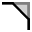
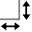

Úprava geometrie
Vo TecZone Bend je k dispozícii výkonný 2D editor výkresov pre úpravu, vyčistenie alebo dopĺňanie geometrie. Stlačením S sa otvorí režim kreslenia. V editore sa zobrazí dielec v rozvinutom tvare.

V rozvinutom pohľade kliknite na ikonu Sketch (Kreslenie)  alebo stlačte kláves S.
alebo stlačte kláves S.
Otvorí sa menu s rôznymi ikonami pre spracovanie rozvinu:

Okno kreslenia
| Ikona | Symbol | Popis |
|---|---|---|
|
Select |
Výber objektov, čiar, položiek atď. |
|
Line |
Kreslenie čiary |
Connected line |
Kreslenie ľubovoľného počtu čiar |
|
Parallel |
Kreslenie rovnobežky s čiarou |
|
|
Normal |
Kreslenie dotyčnice ku krivke |
|
Bendline |
Kreslenie kolmice k čiare |
|
Center-Point Arc |
Kreslenie čiary ohybu |
|
2-Point Arc |
Nakreslí oblúk pomocou stredu, začiatočného a koncového bodu |
|
3-Point Arc |
Nakreslí oblúk pomocou dvoch definovaných bodov (začiatočný a koncový bod) |
|
Tangent Arc |
Nakreslí oblúk, ktorý je dotyčnicou k nakreslenému prvku |
|
Rectangle |
Nakreslí obdĺžnik |
|
Center-Point Rectangle |
Nakreslí obdĺžnik zo stredu |
|
Circle |
Nakreslí kružnicu. Zvoľte stred kružnice a ťahajte kurzor, čím zadefinujete polomer alebo zadajte hodnotu polomeru |
|
2-Point Circle |
Nakreslí kružnicu podľa obvodu. Zvoľte bod na obvode, potom druhý bod a tretí bod. |
|
3-Point Circle |
Nakreslí kružnicu podľa obvodu. Zvoľte bod na obvode, potom druhý bod a tretí bod. |
|
2-Tangent Circle |
Nakreslí kružnicu s dvoma dotyčnicami. Zadajte priemer kružnice, potom zvoľte prvú dotyčnicu a potom druhú dotyčnicu. |
|
3-Tangent Circle |
Nakreslí kružnicu s troma dotyčnicami. Zadajte priemer kružnice, potom zvoľte prvú dotyčnicu, potom druhú dotyčnicu a potom tretiu dotyčnicu. |
|
Inscribed Polygon |
Nakreslí kružnicu s troma dotyčnicami. Zadajte priemer kružnice, potom zvoľte prvú dotyčnicu, potom druhú dotyčnicu a potom tretiu dotyčnicu. |
|
Circumscribed Polygon |
Nakreslí polygón. Špecifikujte počet strán a zvoľte jeho stred a stred bočnej strany. |
|
Edge Polygon |
Nakreslí polygón. Špecifikujte počet strán a definujte počiatočný bod a koncový bod bočnej strany. |
|
Fillet |
Zaoblí roh v mieste stretu dvoch nakreslených prvkov zadaným polomerom, pričom sa vytvorí tangenciálny oblúk |
 |
Chamfer |
Vytvorí skosenie na rohu priesečníka dvoch nakreslených prvkov |
|
In-Fillet |
Oreže roh v priesečníku dvoch nakreslených prvkov so zadaným polomerom |
|
Corner Step |
Oreže roh v priesečníku dvoch nakreslených prvkov obdĺžnikom. Veľkosť obdĺžnika je možné zadať vopred. |
|
Edge Recess |
Vytvorí obdĺžnikový výrez. Potrebné je zadať vzdialenosť rohu, hĺbku výrezu a potom zvoliť roh. |
|
Edge U-Cut |
Vytvorí výrez tvaru oválu. Potrebné je zadať vzdialenosť rohu, šírku výrezu, hĺbku výrezu a potom zvoliť roh. |
|
Edge V-Cut |
Vytvorí trojuholníkový výrez. Potrebné je zadať vzdialenosť rohu, šírku výrezu, hĺbku výrezu a potom zvoliť roh. |
|
Keyslot |
Vytvorí v kružnici otvor kľúča so zadanými hodnotami. |
|
Fillet 3-Seg |
Zaoblí tri spojené nakreslené prvky |
|
Extend |
Zvoľte nakreslený prvok, ktorý je potrebné zväčšiť |
|
Trim |
Zvoľte nakreslený prvok, ktorý je potrebné orezať |
|
Join |
Používa sa na orezanie a spojenie niekoľkých samostatných lomených čiar do jednej |
|
Offset |
Odsadenie jedného alebo viacerých nakreslených prvkov, nakreslených strán modelu alebo plôch modelu o zadanú vzdialenosť |
|
Move |
Zvoľte nakreslený prvok pomocou klávesu ctrl, zvoľte referenčný bod a presuňte nakreslený prvok |
|
Rotate |
Zvoľte nakreslený prvok pomocou klávesu ctrl, zvoľte stred otáčania, potom počiatočný bod a koncový bod otáčania nakresleného prvku |
|
Scale |
Zvoľte nakreslený prvok pomocou klávesu ctrl, zvoľte základný bod, potom počiatočný referenčný bod a koncový referenčný bod pre zmenu mierky nakresleného prvku |
|
Mirror |
Zvoľte nakreslený prvok pomocou klávesu ctrl, zvoľte začiatok čiary zrkadlenia a potom koniec čiary zrkadlenia pre zrkadlenie nakresleného prvku |
|
Rectangle Array |
Použite lineárne vzory na vytvorenie viacerých referenčných kópií jedného alebo viacerých nakreslených prvkov, ktoré je možné rozmiestniť v rovnakých vzdialenostiach pozdĺž jednej alebo dvoch lineárnych čiar. Kliknite na lineárny vzor a zadajte požadované hodnoty |
|
Polar Array |
Použite kruhové vzory na vytvorenie viacerých referenčných kópií jedného alebo viacerých nakreslených prvkov, ktoré je možné rozmiestniť v rovnakých vzdialenostiach pozdĺž jednej alebo dvoch lineárnych čiar. Kliknite na kruhový vzor a zadajte požadované hodnoty |
|
Union |
Zvoľte dva alebo viac uzavretých nakreslených prvkov pre zlúčenie ich plôch |
|
Intersection |
Zvoľte dva alebo viac uzavretých nakreslených prvkov pre vytvorenie oblasti rezu zvolených prvkov |
|
Subtraction |
Zvoľte dva alebo viac uzavretých nakreslených prvkov pre orezanie plochy |
|
Copy Notch |
Pomocou tohto nástroja je možné vytvoriť viacero kópií výrezu pozdĺž okraja. Najprv zadajte vzájomnú vzdialenosť medzi kópiami výrezov a počet kópií výrezov, ktoré chcete vytvoriť. Potom zvoľte výrez kliknutím na dvojčiarové segmenty, ktoré susedia s výrezom |
|
Delete Notch |
Pomocou tohto nástroja je možné vymazať výrez v rohu alebo pozdĺž čiary. Kliknite na dvojčiarové segmenty, ktoré susedia s výrezom a výrez sa odstráni |
|
Mirror Notch |
Pomocou tohto nástroja je možné zrkadliť výrez v rohu alebo pozdĺž čiary. Kliknite na dvojčiarové segmenty, ktoré susedia s výrezom a výrez sa zrkadlovo obráti |
|
Spline |
Ak chcete začať kresliť novú krivku (spline), kliknite na počiatočný bod, pri klikaní na ďalšie body sa vytvorí krivka. Ak chcete uzatvoriť krivku, stlačte kláves ALT a potom kliknite |
|
Profile |
Zadajte dĺžku základne, výšku ohybu, hrúbku, uhol ohybu, vnútorný polomer a stlačte kláves Enter pre vytvorenie profilu |
|
Text |
Používa sa na kreslenie textu, ktorý bude na dielci popísaný laserovým strojom. Po kliknutí na toto tlačidlo sa v zadávacom políčku zobrazia zadávacie polia pre text, veľkosť a uhol natočenia |
|
Truetype Text |
Používa sa na prevzatie tvarov znakov ľubovoľného písma TrueType a ich konvertovanie na lomené čiary. Na tieto lomené čiary je potom možné použiť obrábanie laserom, ktoré ich umožní vyrezať. Po prvom kliknutí na toto tlačidlo sa zobrazí dialógové okno Font písma, ktoré umožňuje zvoliť písmo, ktoré sa má použiť pre text |
|
Common Shape |
Používa sa na vytvorenie niekoľkých bežných tvarov a ich vloženie do výkresu. Po kliknutí na toto tlačidlo sa zobrazí dialógové okno Make Shape (Vytvoriť tvar), ktoré umožní zvoliť tvar z palety tvarov uvedených v zozname |
|
Simple Dimension |
Zvoľte prvý bod kóty, potom druhý bod kóty a nastavte umiestnenie kótovacej čiary |
|
Baseline Dimension |
Zvoľte prvý bod kóty, potom druhý bod kóty a nastavte umiestnenie kótovacej čiary |
|
Continue Dimension |
Zvoľte prvý bod kóty, potom druhý bod kóty, umiestnenie kótovacej čiary a zvoľte ďalší bod kóty |
|
Horizontal Ordinate Dimension |
Súradnicové kóty sú tvorené sadou kót, ktoré sa merajú od nulovej súradnice vo výkrese. Zvoľte referenčný bod a umiestnenie kótovacej čiary |
|
Vertical Ordinate Dimension |
Súradnicové kóty sú tvorené sadou kót, ktoré sa merajú od nulovej súradnice vo výkrese. Zvoľte referenčný bod a umiestnenie kótovacej čiary |
|
Angular Dimension |
Vytvorí kótovanie uhla. Zvoľte prvú čiaru, potom druhú čiaru, medzi ktorými chcete okótovať uhol |
|
Radius Dimension |
Vytvorí kótovanie polomeru. Zvoľte kružnicu, na ktorej chcete okótovať polomer. Priemer okótujete stlačením klávesu ctrl |
|
Center Point Radius Dimension |
Vytvorí kótovanie polomeru. Zvoľte kružnicu, na ktorej chcete okótovať polomer. Priemer okótujete stlačením klávesu ctrl |
|
Callout Dimension |
Používa sa na pridanie poznámok k výkresu vo forme popisov. Ak chcete vytvoriť popis, zadajte text, ktorý sa má zobraziť, kliknutím označte, kam má šípka smerovať, a znova kliknite, kam sa má text umiestniť. |
 |
Segment Dimension |
Používa sa na pridanie kótovania priamych a zakrivených segmentov. Kliknite na segment, ktorý chcete okótovať, ďalším kliknutím umiestnite kótu. Alebo podržte stlačené a kliknite na segment, čím sa kóta umiestni automaticky. |